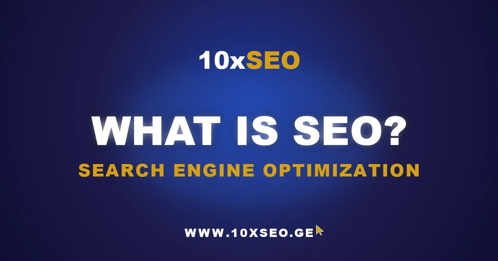

Technological advancement and the steady migration of daily life online have fundamentally changed how businesses must operate. Traditional marketing alone is no longer enough — every growth-oriented business needs a strong digital presence.
It is almost inconceivable in 2025 for a growth-focused business to lack a website, yet simply having one is not enough either. Today's consumer researches everything online — a medical condition, a gift for a friend, an apartment to rent, car insurance. Success goes to the business that is most visible and easiest to find in that digital moment. That is exactly where SEO (Search Engine Optimization) comes in. SEO is the practice of optimizing a website so that search engines understand what it is about, who it is for, and when to surface it — so that after a Google search, the user is directed to your page.
The goal of SEO is to occupy first-page positions in search engine results pages (SERPs) for the most relevant and valuable keywords your target audience is searching for, which drives qualified, intent-driven traffic to your site. For example, if you run a hair salon, you want a user searching "haircut near me" or "spa treatment" to land on your website — and for that to happen, you need to rank prominently in search results.
SEO is considered one of the best-practice disciplines in digital marketing and can be applied to any website. It helps sites improve their visibility in search engines such as Google and Microsoft Bing. Whether you are promoting products, offering services, or sharing expert knowledge on a specific topic — SEO helps you grow traffic and improve online visibility.
Technology evolves constantly, which means websites — and their architectures — change. The devices people use to access search engines change too. The stronger your pages' visibility in search results across every device, the better your chances that users will find you and convert. This guide explains in depth what SEO is and which trends are defining it in 2025.
SEO vs. SEM vs. PPC — What Is the Difference?
When discussing digital marketing, and search marketing in particular, three core terms appear repeatedly: SEO, SEM, and PPC. Understanding exactly what each means and how they function is critical to building an effective marketing strategy.
What does each term mean?
SEO (Search Engine Optimization) is the process of optimizing a website so that search engines like Google and Bing better understand its content and show it for relevant queries. SEO targets organic (non-paid) traffic.
PPC (Pay-Per-Click) is an advertising model in which companies pay each time someone clicks their ad. The most widely known example is Google Ads, where ads appear in paid placements within search results.
SEM (Search Engine Marketing) is the umbrella term for search engine marketing in general. SEM encompasses both SEO and PPC — it is the strategic approach that combines organic and paid methods to maximize your visibility in search.
Think of search engine marketing (SEM) as a coin. On one side sits SEO — organic traffic that draws users to your site from search engines at no cost per click. On the other side is PPC — paid advertising where you pay for every visitor.
To understand how these disciplines differ, consider their mechanics: SEO is built on content optimization and technical improvements so your site earns high positions in Google's organic results. PPC is built on advertising — you pay to appear at the top of search results for specific keywords, and you pay per click. SEM, ultimately, encompasses both — it is the strategic approach that combines SEO and PPC to maximize total search visibility.
SEO or PPC — which channel wins?
Many marketers debate which path delivers better results: SEO or PPC. In reality, each has its own strengths. SEO delivers stable, long-lasting traffic but requires time and technical investment. PPC delivers fast results and allows precise keyword targeting — but comes with ongoing cost. The best approach is to combine both, if your budget allows. Use PPC to generate immediate leads while SEO compounds in the background, so that eventually your organic traffic does the heavy lifting at a fraction of the cost.
Why SEO Matters — Especially for Your Business
In today's digital world, where nearly every consumer uses a phone or computer to search for information, SEO has become the foundation of successful online business. Whether you run an e-commerce store, a clinic, a travel agency, or a restaurant — operating without SEO in the digital space is an increasingly losing position.
Search engines, and Google in particular, are the primary gateway to information. When a customer searches for a hotel, the best endocrinologist, or even a good khinkali restaurant — that search overwhelmingly begins in Google. That is the moment your business has a chance to appear on the first page and earn the customer's attention. And when you rank at the top organically, without an ad label, it also signals credibility.
What do the numbers say? The data is clear:
- Google processes over 8.5 billion searches every single day worldwide.
- Google holds 91% of the global search engine market.
- Organic search accounts for an average of 53% of all website traffic.
Consumer behavior mirrors these global patterns everywhere — people begin every purchase decision with an internet search: where to buy, where to go, who to trust. Mobile search has made this a reflex rather than a deliberate act.
If your business is not visible in Google search results, you are giving away opportunity. SEO helps you attract users who are already interested in your product — saving you money on ads and promising better organic traffic over the long term. Ranking in the top positions without paying for ads also builds an additional layer of trust.
A question that comes up often: why should a business invest in SEO when other advertising channels exist and faster results are possible? The answer is straightforward. Paid advertising — whether traditional (TV spots, street banners, flyers) or digital — is temporary: when the campaign ends, the traffic disappears. Social media traffic is also unstable — algorithms change frequently, organic reach declines. SEO, by contrast, is durable. Work done well today continues to deliver results far into the future.
Today's SERPs are crowded with offers, ads, and rich results — if your site is not optimized, it simply gets buried in the digital noise. SEO is not just technical optimization. It is brand vision, content quality, user experience, and deep knowledge of how your customers think and search. When you know what your audience is looking for, you can apply that knowledge across every marketing channel.
SEO is the foundation on which a brand's digital success is built — whether you are a small business in a regional town, a boutique hotel in the mountains, or a large e-commerce operation in the capital. Instead of spending money on paid ads month after month, a smart long-term investment in SEO compounds into organic visibility that pays dividends for years.
How SEO Works
Imagine you have a business, a website, social media pages, and you regularly publish new products and updates. Now imagine the other side of that equation — a person who needs exactly what you offer. What happens if those two parties never find each other?
That is precisely the moment SEO enters the picture. It becomes the invisible bridge between you and your potential customer. And that bridge does not build itself — it requires a plan, expertise, and continuous care.
A user begins a Google search — "best wine in Georgia" or "budget-friendly holiday in the mountains." Google then starts making a decision: which pages should it show this specific user?
Google has access to billions of web pages. How does it decide that your page is more valuable than everyone else's? Your website must be "understood" by Google — and that understanding is the result of SEO.
This article is a good example: there is a strong chance you arrived here via Google. Why? Because:
- The website where this article lives has been writing about SEO topics for a long time.
- Other sites link to it (which signals it is trustworthy and authoritative).
- The information here is useful, credible, and directly answers users' questions.
That is how SEO "works" — it surfaces the pages that genuinely provide the relevant value.
It is important to understand: SEO is not simply a list of technical parameters you fix once and forget. It is a living process, built from four interconnected components:
- People — a team or specialist responsible for creating the strategy, executing it, and maintaining quality.
- Process — the strategy that defines the steps: what to do, when, and how.
- Technology — the tools that help analyze data, optimize pages, and measure results.
- Output — content that actually appears in search results and brings visitors to your site.
Understanding how SEO begins means understanding how a search engine thinks. Google's operation is comparable to a librarian working in an enormous library — it searches for the best answer to every question. This process has four essential stages:
- Discovery (Crawling) — Google's bots constantly "crawl" the web to find new and updated pages.
- Understanding (Rendering) — Google then attempts to understand what each page is about, using its code, text, and visual elements.
- Storage (Indexing) — If the page meets quality standards, Google adds it to its enormous database (the index).
- Ranking (Serving) — Finally, when a user asks a question, Google determines which indexed page is most likely to have the right answer.
This is why digital marketing and SEO do not end at simply having a page that "exists" and uses keywords. A page must be convincing, valuable, and technically sound to have any chance of ranking highly.
Imagine you have opened a restaurant. To succeed in the digital space you must ask yourself: what does the person who will become my customer actually search for — "budget café in the city center" or "best authentic regional dish in town"? To answer that, you need a well-defined brand identity, a clear picture of your target audience, and then a structured keyword research process to determine:
- How does your audience behave online?
- What are your competitors doing?
- Is your site technically sound?
- What should happen to your existing content — keep, update, or remove?
And that is just the beginning. Simply inserting a keyword like "delicious food" into content and waiting for results is not SEO — SEO is far more complex than that.
An SEO strategy is like having a great car with a full tank but no driver. The vehicle exists, the fuel is there — but without direction it goes nowhere.
So how do you plan and document a strategy? How do you set goals, measure results, establish timelines, and choose the right tools? That is exactly why you need an SEO audit — before beginning optimization, you must understand your weaknesses and strengths, what needs to change, the competitive landscape in your niche, which strategies your competitors are using, and — most importantly — what your own potential is. Getting answers to these questions should be entrusted to an experienced team. SEO specialists like 10xSEO offer in-depth audits that tell you exactly how to proceed with your site's optimization.
An SEO audit is the foundation of all optimization work — the more thorough it is, the more successful everything that follows will be. You can submit a request on the 10xSEO website and receive your audit results in a 10-minute video in which professionals walk you through your site's current state, the errors that exist, the potential that fixing those errors would unlock, the market size in your niche, and a competitor analysis.
What happens after the audit? First, an optimization strategy is written and execution begins — new content is created, existing content is refined, headings are updated, internal links are added, and low-value or outdated pages are removed. Crucially, these steps must never be mechanical. Every change must serve a purpose — to be more relevant, more useful, and more compelling to the users you want to reach.
The next stage is ongoing monitoring. Nothing is worse than lost work — for example, if after an optimization push a page loses its index status, a link breaks, or traffic suddenly drops. This is why SEO demands continuous observation and oversight. A site that ranks on the first page today can fall behind a competitor tomorrow. SEO is alive. It demands periodic updates, evolution, and course corrections.
Not sure where your SEO stands right now?
Get a free 72-hour SEO audit — a Loom video walkthrough of your site's issues, opportunities, and competitor gaps, delivered by our team.
Types of SEO and Specializations — The Full Game Plan
Working on SEO resembles a team sport. Winning the championship requires more than strengthening just one area — you need to attack with the same effectiveness with which you defend.
To reach the top positions in Google and make your business visible online, your energy must flow in several directions at once. This is not just about technical parameters or well-written copy. SEO is a far more complex, multi-layered process.
Technical SEO
First, let us talk about Technical SEO — it is the foundation on which everything else is built. For Google's bots to efficiently "move through" your pages, read them, and add them to the index, your website must meet technical standards. If those standards are not met, everything else you do is wasted effort. Google will not read your text, your carefully produced video, or your perfectly chosen images.
Technical SEO is not only the guarantee that your site appears in Google — it also ensures a good user experience: pages load fast, the site is secure, it works seamlessly on mobile, and information is well-structured.
The key areas of technical SEO include:
- Mobile optimization — Google uses mobile-first indexing, meaning it evaluates the mobile version of your site first.
- Page speed — Slow pages increase bounce rates and are penalized in rankings.
- Core Web Vitals — Google's set of user experience metrics (loading, interactivity, visual stability) that directly influence ranking.
- Structured data — Schema markup that helps search engines understand the context of your content.
- HTTPS security — A secure, encrypted connection is a confirmed ranking signal.
- Crawlability & indexability — Ensuring Google can discover and index all your important pages via sitemaps and a clean robots.txt.
On-Page SEO — Content and On-Site Optimization
Once your site is technically sound, the next layer begins: what does your content look like? What does a visitor see when they land on your page? And — critically — how does Google interpret that information?
Content must be written for people, not for an algorithm. Text must be written in natural, human language, must answer genuine questions, must be grounded in real user needs, and must avoid being superficial. Thin content — pages that exist primarily to stuff keywords — sends negative quality signals to Google and damages your rankings.
Keyword usage must be correct: not overused, but woven naturally into the content so that the page has a genuine chance of appearing for the right queries. Keyword stuffing is a black-hat technique that has been penalized since Google's early algorithm updates and remains harmful today.
But content is not just text. Visuals, video, headings (H1–H4), image alt text, meta descriptions — every element contributes to an SEO-friendly page. This combination is our primary "offensive play" in the SEO game — content that engages both users and search engines.
On-page SEO best practices include:
- Keyword research — Understanding what queries your target audience actually uses before writing a single word.
- Title tags and meta descriptions — The first things users see in search results; they determine whether someone clicks.
- Heading structure (H1–H3) — Organizes content for readers and helps search engines understand hierarchy and topic focus.
- Internal linking — Connecting related pages on your site to distribute ranking authority and improve navigation.
- Image optimization — Compressed file sizes for fast loading, descriptive file names, and alt text for accessibility and image search.
- Content depth — Comprehensive coverage of a topic signals expertise and increases the chance of ranking for a wider range of related queries.
Off-Page SEO — Authority and Reputation
Off-page SEO is comparable to fans filling the stadium — it is the world outside your website signaling its confidence in you.
While you have full control over technical SEO and on-page content, there is a third front that operates largely outside your direct control. And yet it is one of the most powerful levers. Off-page SEO is about how the external world — other websites, blogs, social media, real users — perceives and values your site.
The single most powerful instrument in this space is link building — earning links from sites that are already trusted and authoritative. One backlink from a high-authority site can carry more weight than a hundred random, low-quality links. This is Google's original insight, the PageRank algorithm: a link is a vote of confidence from one site in another.
But links do not come on their own. Earning them requires building genuine relationships, PR activity, content marketing, and active social media presence. This work is tightly linked to brand building — how widely are you known, how much are you trusted, and how recognized is your expertise?
Off-page optimization is not just for SEO — it represents brand value across the entire digital landscape. This is why many marketers now call SEO "search experience optimization" — it is not only about how you are found, but how your brand is received everywhere it is encountered.
Off-page SEO tactics include:
- Link building — Earning backlinks through high-quality content, guest posting, digital PR, and industry partnerships.
- Brand mentions — When authoritative sites mention your brand (even without a link), Google interprets this as a trust signal.
- Social proof — Social engagement and shares amplify content reach, increasing the chance it attracts natural links.
- Reviews and ratings — Especially important for local businesses; Google My Business reviews directly influence local ranking.
- Digital PR — Being cited in news articles and industry publications builds authority and generates high-quality backlinks at scale.
SEO Specializations
Each website, platform, or business type demands a tailored approach. SEO has developed distinct specializations that emerge when working on specific project types. For example:
E-commerce SEO requires concentration on products, category pages, and reviews — it is the technical and content refinement of an online store. Faceted navigation, product schema, duplicate content management, and review markup all become critical at scale.
Local SEO is especially important for location-based businesses. A restaurant in one neighborhood, a clinic in another district, a boutique hotel in a mountain region — all need local visibility in Google Maps and local search results. Google Business Profile optimization is at the center of local SEO strategy.
News SEO demands a completely different pace. The question here is how quickly you can appear in Top Stories or Google News. Every minute meaningfully shifts your visibility, making technical speed and structured data (NewsArticle schema) essential.
International SEO involves working on multilingual platforms — for example, Georgian-English sites, or targeting markets beyond Google, such as China's Baidu or South Korea's Naver. Hreflang implementation, language-specific keyword research, and geo-targeting settings are core to this specialization.
Enterprise SEO is large-scale work — millions of pages, cross-functional teams, and complex technical systems. Automation, governance, and coordination become as important as any individual tactic.
Ultimately, SEO is not just arranging technical building blocks. It is the user experience. It encompasses building the right brand voice in the digital space, content that centers the user, a fast and mobile-optimized website, and — most importantly — genuine connection with the world outside your domain. Victory in SEO does not come by accident. It comes when every element plays together: defense, offense, and an audience that applauds the result.
How SEO Evolves Over Time
The internet is one enormous, effectively infinite library. People use it every day to search for answers, advice, products, employment, and information. Your website deserves its own shelf in that library — provided you plan your SEO correctly and adapt to what both search engines and users need.
But the shelf you occupy today is not permanent. Every day the arrangement shifts — user behavior changes, search algorithms are updated, and the librarian itself — the search engine — evolves.
Why do search engines change? Because people change. It is not as frequent or dramatic as the changes seen in social media algorithms, but over time everything transforms. SEO is not a field you master once and then follow the same rules forever. It evolves as people evolve — in how we search for information, how we use technology, how we live in the digital age.
Society changes. We now search for information through voice commands, photos, and even short-form video. What once lived in a simple Google text search box might today be executed through an AI assistant or a social media search bar.
When mobile internet first became widely accessible, it immediately meant websites had to deliver information in a new format. Then came smartphones, voice search, visual search, and 5G networks. And SEO evolved to become a considerably more technical discipline. Where once it was enough to insert keywords and create content, today it is essential to have:
- A fully optimized mobile site experience
- Fast page loading times on every connection
- Compliance with all Core Web Vitals metrics
- Structured data implementation across key page types
- Readiness for AI-powered search
This is precisely why a new term has emerged: GEO (Generative Engine Optimization), which means optimizing content not only for Google but for AI search systems: ChatGPT, Gemini, Bing Copilot, Perplexity, and others. Where SEO gets you cited in blue links, GEO gets you cited inside AI-generated answers.
Technology is only one side. The other side is the human events we have lived through and continue to navigate. The COVID-19 pandemic from 2020 onward was a defining turning point — it changed not only how much time we spend online but how we make decisions. Consumers concentrated more intensely on local businesses, online shopping, and thorough research before purchasing. Enormous numbers of companies were forced to begin taking SEO seriously.
Global economic instability, geopolitical disruptions, inflation — all these events directly affect consumer behavior. When people have less money to spend, they research more, compare more, deliberate longer before buying. This means SEO must adapt to new economic realities — working effectively with fewer resources but greater precision.
Today, SEO is no longer just a "technical fix list." It is a marketing discipline that grows in scale year after year. The demand for both local and global SEO continues to rise — this is no longer a "premium service" or a luxury for large corporations. It is a necessary resource for any business that wants to succeed in the digital space.
SEO evolves every day — alongside technology, society, and business strategy. But one thing remains constant: as long as people search for information, products, or services, SEO will never stop being relevant.
Frequently Asked Questions
What is SEO?
SEO (Search Engine Optimization) is the practice of optimizing a website so that search engines like Google understand its content, trust its authority, and rank it higher in organic (non-paid) search results. SEO encompasses technical improvements, on-page content optimization, and off-site authority building. The goal is to attract targeted visitors who are already searching for what your business offers — without paying for every click.
What is the difference between SEO, SEM, and PPC?
SEO focuses on earning organic rankings through content quality, technical performance, and authority — you do not pay per click. PPC (Pay-Per-Click) is paid advertising where you pay each time someone clicks your ad. SEM (Search Engine Marketing) is the umbrella term that covers both SEO and PPC together. The key distinction: SEO builds sustainable long-term visibility; PPC delivers immediate results but stops when the budget runs out.
Why is SEO important for businesses?
Organic search is the single largest source of website traffic, accounting for an average of 53% of all visits. Google processes over 8.5 billion searches per day and holds 91% of the global search market. When a potential customer searches for your product or service, appearing on the first page determines whether they find you or a competitor. Unlike paid ads, well-executed SEO compounds over time and continues delivering traffic long after the initial investment.
What are the three main types of SEO?
The three main types of SEO are: (1) Technical SEO — making your website crawlable, fast, mobile-friendly, and structurally sound so search engines can index it properly; (2) On-page SEO — optimizing individual pages through keyword research, well-structured content, meta tags, headings, and internal linking; and (3) Off-page SEO — building your site's authority through link building, brand mentions, PR, and social signals from trusted external sources.
How long does SEO take to show results?
SEO typically takes 3 to 6 months to show meaningful ranking improvements, and 6 to 12 months to deliver significant traffic growth. The timeline depends on your site's current authority, keyword competition, and the volume of optimization work applied. Unlike paid ads, SEO results compound over time — pages that rank well continue attracting traffic for years, making it one of the highest-ROI long-term investments in digital marketing.
Ready to rank higher and grow faster?
Talk to 10xSEO about your SEO strategy. Free 15-minute consultation — no commitment, no fluff.
Book Free Consultation